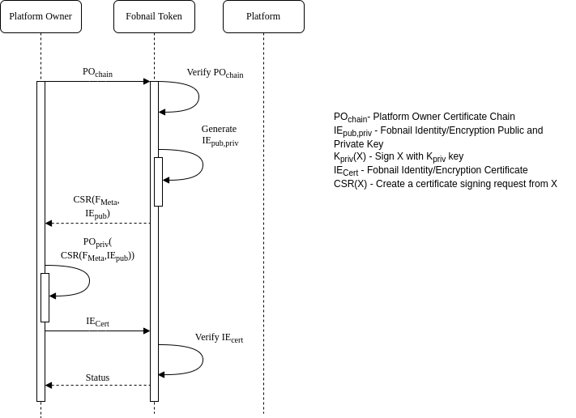
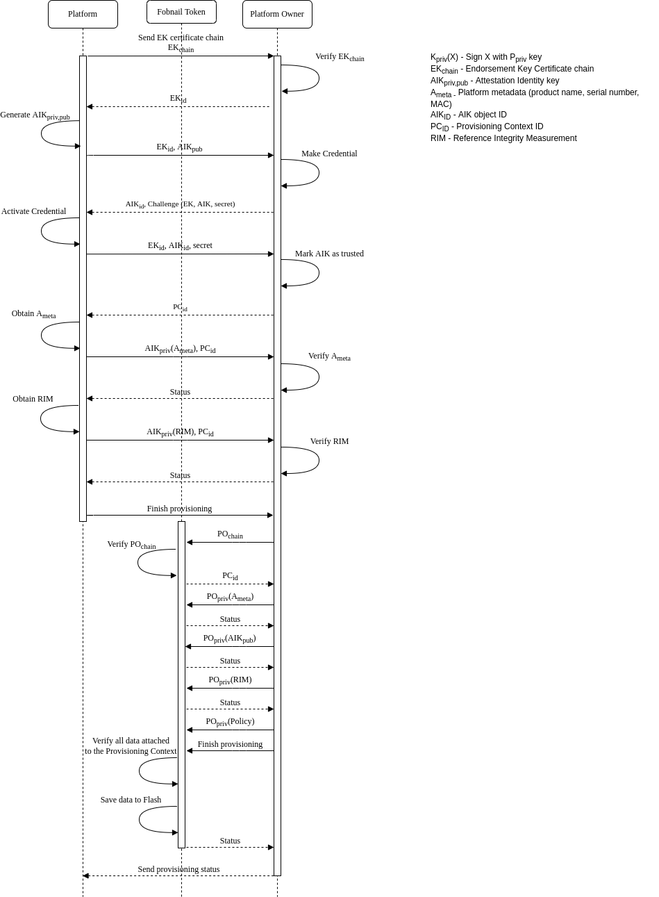
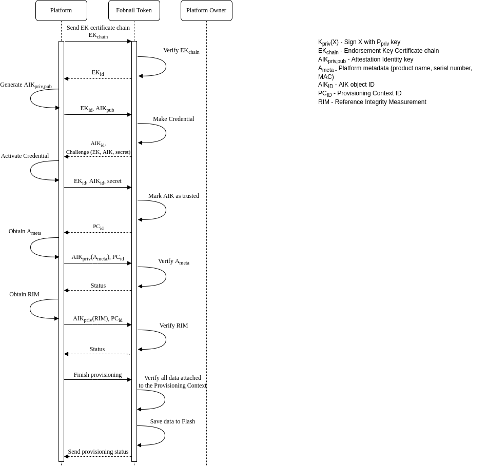
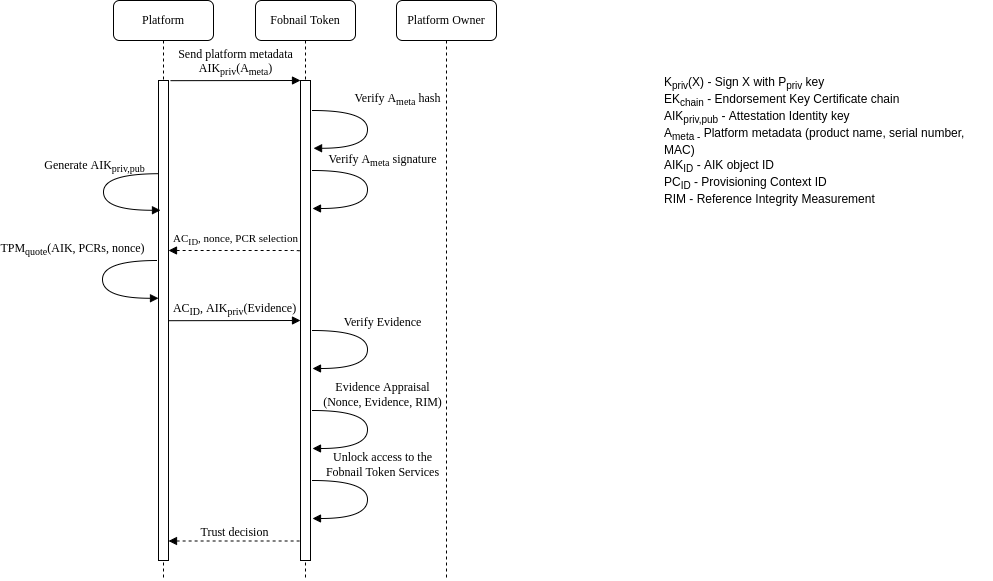

Fobnail architecture
Fobnail components
See Remote Attestation Procedures Architecture for definitions of roles and artifacts mentioned below.
Platform Owner
Takes roles of Verifier Owner and Relying Party Owner, as defined in RATS. Produces Appraisal Policies for Attestation Results and Evidence.
During remote platform provisioning Platform Owner additionally proxies Reference Values, but Reference Value Provider role is still taken by the platform that is being provisioned.
Fobnail Token
Combines roles of Verifier and Relying Party. Consumes Evidence (from Attester), Reference Values (from Attester during local platform provisioning or from Platform Owner during remote platform provisioning), Endorsements (same as Reference Values, in form of EK certificate), Appraisal Policies (either installed by Platform Owner during remote platform provisioning or preinstalled default policy). Produces Attestation Result.
Platform
During platform provisioning, takes role of Reference Value Provider. It also relies Endorsements saved in TPM, but platform itself isn't an Endorser.
During attestation, platform is an Attester - it collects Claims and produces an Evidence from it.
Other parties
The only missing role is that of an Endorser. Usually this is TPM manufacturer that installs EK certificate in TPM NVRAM.
In cases when this certificate is not generated by TPM vendor, Endorsement must be created by another entity; this is outside of scope of Fobnail architecture.
Fobnail provisioning
The purpose of provisioning is to provide a controlled process for an individual to take ownership and configure the Fobnail. During the provisioning process the token should provide the following information to the provisioner in the form of Certificate Signing Request (CSR):
- A public key to use for generating a certificate
- Metadata about the token, e.g. model, serial number, etc
A token will consider itself provisioned when it is in an unprovisioned state
and a provisioner sends it the certificate containing the public key the token
generated. keyUsage field in that certificate depends on the actual use case,
for example it may be used as an authentication certificate by platform when
connecting with a server (e.g. SSH or mTLS). In that use case the platform
doesn't know the private key, Fobnail Token performs the initial encryption
during handshake.
Either during provisioning or post provisioning a provisioner may send the following information,
- RIM Database
- Policy Database
- Attestation Protected Object
This information must be signed by private key for the provisioner identity certificate contained in the provisioner Certificate Chain.
Fobnail provisioning diagram

Platform provisioning
Fobnail architecture consists of two main functionalities - provisioning and attestation. We need to provision a Fobnail token and platform. The platform provisioning is split into remote provisioning and local provisioning. During the remote provisioning, the platform can connect to the platform owner. The platform owner verifies the platform state and provides the RIM and attestation policies to the Fobnail token.
Remote platform provisioning diagram

In the case of local provisioning, the Fobnail token takes the platform owner role. The Fobnail token does not receive the policies, and default policies are used during the attestation.
Local platform provisioning diagram

Attestation
Fobnail role in the attestation of a system is to evaluate an Attestation Token and arrive at a decision whether the attested platform represents a good state. Fobnail is not an enforcement point for this decision and can only provide a physical and digital response to convey its decision. The physical response assumes that a user is monitoring the Fobnail Token and will take appropriate enforcement action(s). A digital response comes in the form of an Authorization Token that is returned back to the system. The assumption here is that the Authorization Token can securely be used by the system to enforce the decision or forwarded to an external entity that can enforce the decision.
Attestation diagram

Default appraisal policy
Appraisal policy controls what part of Evidence must match RIM, and what "match" means for a given element of RIM. Sometimes this is exact match (e.g. hash), for other data this may be value relation to reference value (e.g. component version same or newer than that from RIM).
Default policy for Fobnail includes comparison of hashes of PCRs 0-7 and 17-18,
for SHA256 bank. It is checked by using TPM2_Quote() command in order to avoid
sending true PCR values through potentially insecure channel during attestation,
so only hash of concatenation of those values can be intercepted during transit.
In addition to PCR selection, Fobnail Token sends nonce that is included in
signed response, which protects against replay attacks, and in combination with
TPM mechanism against signing external data starting with magic number also
proves that Claims and Evidence are fresh.
Reasoning for choosing this particular set of PCRs is that PCR0-7 are used by pre-OS environment, and PCR17-18 are used in DRTM flow. Other registers are used by OS and may change after software is updated, which would require frequent re-provisioning of platform. SHA256 is the only algorithm commonly used - SHA1 is deprecated and SHA384, while mandatory according to latest TPM specification, is not implemented by majority of available TPMs.
In addition to configurable part of policy described above, there are also implicit assumptions:
- Metadata is always checked - hash of metadata is used to generate filenames for data stored in Fobnail Token.
- AIK (and because of its relation, also EK) doesn't change - it is saved during platform provisioning and never again sent by the Attester. During attestation Fobnail Token checks signatures of received data against this saved copy.